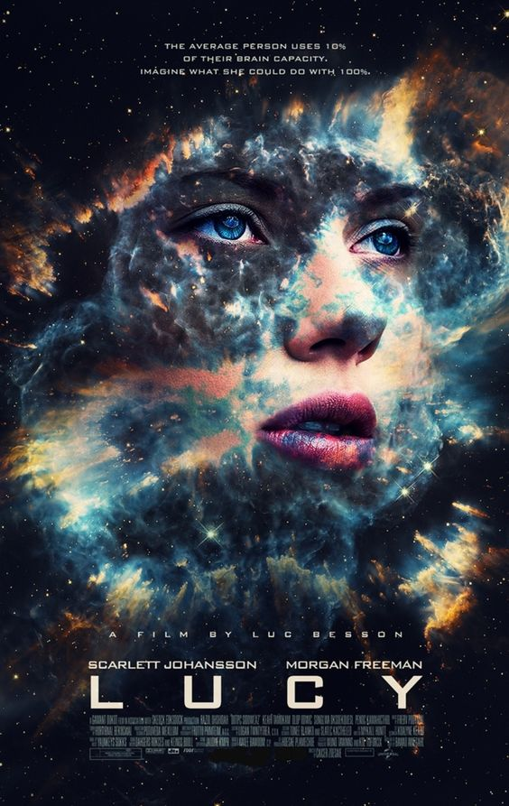
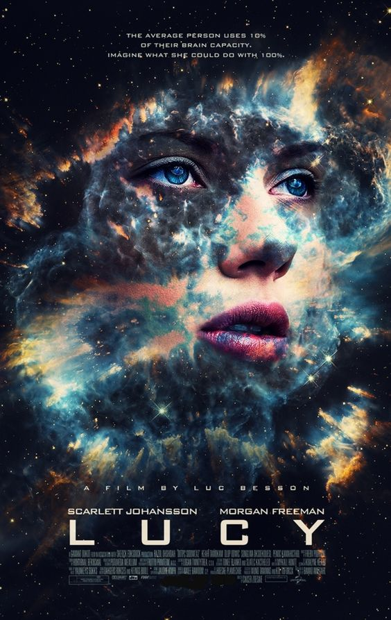

|  | Evaluation | 6.4/10 |
|---|---|---|
| langauge | French | |
| Translation | Arabic | |
| Movie Quality | HDR | |
| Production | France | |
| Year | 2014 | |
| Film duration | 89 minutes | |
| Number of parts | - |
|  | Evaluation | 6.4/10 |
|---|---|---|
| langauge | French | |
| Translation | Arabic | |
| Movie Quality | HDR | |
| Production | France | |
| Year | 2014 | |
| Film duration | 89 minutes | |
| Number of parts | - |
Lucy Miller est une jeune femme vivant à Taipei (Taiwan). Prise dans un guet-apens par la mafia coréenne, elle est contrainte de faire la « mule » pour des trafiquants de drogue qui insèrent un paquet de poudre bleue dans son ventre, le CPH4, produit de synthèse expérimental.
| The actress Scarlett Johansson (Lucy): | |
|---|---|
She is an American actress, model, and singer, born on November 22, 1984. She began her artistic life since childhood at the age
of nine, after her mother began taking her to auditions, due to her mother’s affiliation with the artistic community, as she is the
producer Melanie Sloan, her father is a Danish-born architect, and her sister is an actress. Vanessa Johansson, and her twin brother “Hunter”
appeared with her in the movie Manny & Lo 1996, and an older brother Adrian, and another brother from her father “Christian” and her grandfather,
director and screenwriter Egner Johansson. She won the Best Actress Award from the Independent Spirit Awards for her role in Manny & Lo in 1996.
After Johansson proved her remarkable talent in front of the cameras, the quality of the roles she was granted developed until she co-starred in several
important films, which earned her great awards between the Golden Globes, the BAFTA and the Tony. Award. Scarlett Johansson is so famous that she has her own
star on the Hollywood Walk of Fame. Also, many media and fans consider her to be among the most attractive and beautiful women in the world.
|
| The actor Morgan Freeman (Norman): | |
|---|---|
He is an American actor, born in 1937. He joined the US Air Force to serve as a radar specialist, and
later moved to Los Angeles, where he took acting lessons in Pasadena. Morgan Freeman started acting in the
theater, where he participated in the plays Coriolanus and The Gospel at Colonus. Freeman has been nominated
for an Oscar multiple times, and he won the award for his role in the movie, Million Dollar Baby (2004).
He's best known for Driving Miss Daisy (1989), Unforgiven (1992) and Se7en (1995).
|
| The actor Amr Waked (Rio): | |
|---|---|
Amr Waked is an Egyptian film, television and stage actor. Western audiences best know him for his roles as
the terrorist leader in Syriana (2005) opposite George Clooney, Rafik in Soderbergh's Contagion (2011), and as Yemeni
Sheikh Muhammad in Salmon Fishing in the Yemen (2011). Waked graduated from the American University in Cairo with a degree
in political science. He worked full-time as a stock trader and moonlit as an actor before fully committing to his acting career.
He got his break in 2001 with Friends or Business. He got his first lead role in The Fish's Tail in 2003, for which he won a Best Actor
award at the Alexandria International Film Festival. The next year, he honored the revolution in his critically acclaimed film "Winter of Discontent"
directed by documentary-maker Ibrahim El-Batout.
|